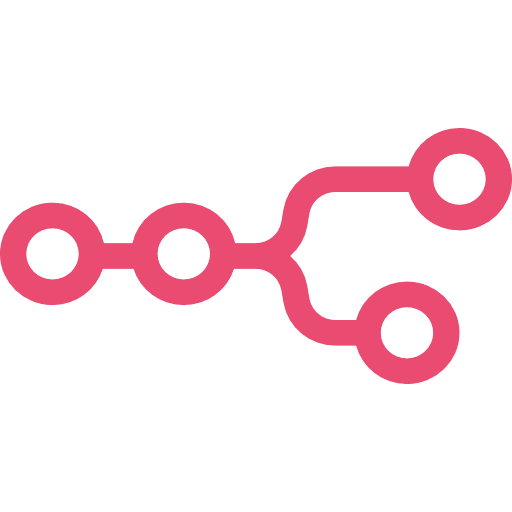

Tecnologías y Herramientas

n8n

JavaScript
Docker
Integraciones de
APIs
Desarrollo web
(Frontend/Backend)
Transformo procesos manuales en flujos automáticos que ahorran tiempo y dinero. Especializado en arquitectura de bots, integración de APIs y desarrollo web.

n8n
JavaScript
Docker
Integraciones de
APIs
Desarrollo web
(Frontend/Backend)
E-commerce & Custom Chatbot
Plataforma integral de comercio electrónico. Incluye la integración nativa de un widget de chat personalizado flotante en el sitio web para asistencia en tiempo real de los clientes.
WhatsApp Automation
Bot de gestión de turnos automáticos para un lavadero de autos. Conectado a través de la API no oficial de ycloud para procesar solicitudes, mostrar precios y agendar reservas de forma fluida.
Prueba chatear en tiempo real con el asistente virtual de Atencia Garage sin salir del portfolio.
Atencia Garage Bot
En línea (IA Activa)
Ponte en contacto conmigo y analicemos cómo podemos automatizar las tareas repetitivas de tu negocio.